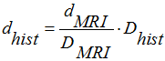
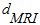
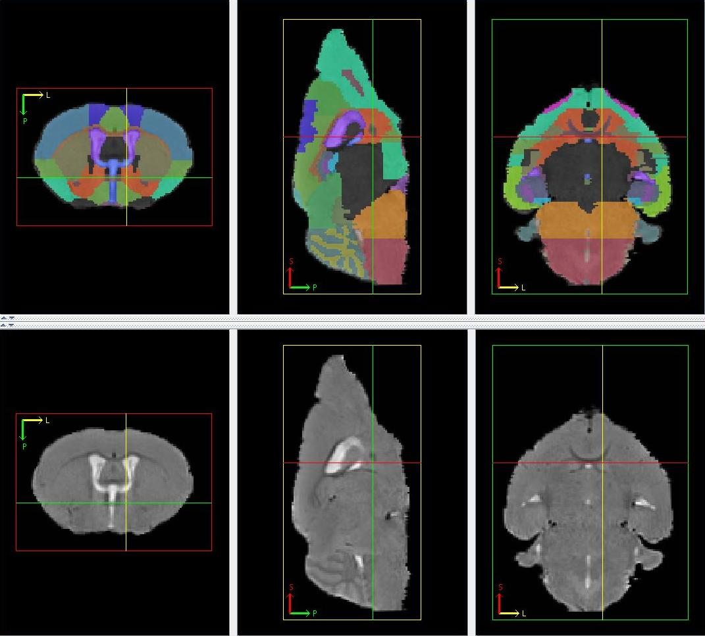

In vivo Mouse Brain Atlas
We delivered five in vivo T2-weighted mouse brain images with structural labels. 39 structures (Table 1) were manually identified on every image based on the mouse brain histology atlas in stereotaxic coordinates by Franklin and Paxinos. The manually delineation was mainly operated on the axial view. However, some structures which are easily identifiable in the coronal or sagittal views were first delineated in these views before refining the delineation in the axial view. After all the structures were labeled for the first time, repeated revisions were done so as to ensure (1) all the voxels of the image containing brain tissue are labeled, (2) the relative sizes and locations of the structures in the axial view are similar to that of the histology atlas and (3) the structure boundaries appear as smooth as possible in all the three views. In the following, we described the delineation protocol for each structure, accompanied by a figure showing the respective delineation. The cursors in the figures point to the position of the structure being delineated in that step. The work was written in Bai et al. (2012)[1].
General Protocol
The mouse brain histology atlas in stereotaxic coordinates by Franklin and Paxinos is used as a reference for delineation of the structures. The T2-weighted image of the subject mouse brain is first rigidly transformed to the atlas space before determining the histology slice corresponding to each T2-weighted image slice.

: Distance from the posterior extreme of the histology atlas brain
: Distance from the posterior extreme of the T2-weighted subject image brain
: Length of histology atlas brain
: Length of T2-weighted subject image brain
is computed for every axial slice using the image slice thickness and is computed from the equation above before converting it to the Bregma distance used in the histology atlas. The slice in the histology atlas, with the nearest Bregma distance to the one calculated, is used as the reference for the particular axial image slice.
|
|
|||||||||||||||||||||||||||||||||||||||||||||||||||||||||||||||||||||||||||||||||||||||||||||||||||||||||||||||||||||||||||
Corpus callosum belongs to white matter of the mouse brain and hence, is hypointense in a T2-weighted image. It is present throughout much of the cerebrum and forms a distinctive M-shaped roof over many internal cerebral structures. It can be found from Bregma 1.98 mm to Bregma -4.84 mm in the histology atlas. In the MRI image, the anterior extreme of the corpus callosum can be found in the frontal lobe with the corpus callosum from the left and right hemispheres separated from one another in the axial view. As the axial slices progress from anterior to posterior, the medial edges of the corpus callosum progressively expand towards the midline and eventually join together. The corpus callosum from the left and right hemispheres separate again approximately halfway from the anterior extreme of the brain to the posterior extreme of the brain, before shrinking in size. The labelling of the corpus callosum includes the external capsule, the cingulum bundle and the dorsal hippocampal commissure as these structures are difficult to separate out on the MR image.
Figure 1
The lateral ventricles belong to the ventricle system and are hyperintense in a T2-weighted image. The lateral ventricles from the left and right hemispheres are separated and can be made up of disjointed parts. They can be found from Bregma 1.94 mm to Bregma -2.92 mm in the histology atlas. They begin within the posterior olfactory bulb with corpus callosum acting as its superior border.
Figure 2
3. Third Ventricle
The third ventricle belongs to the ventricle system and is hyperintense in a T2-weighted image. It is centrally located when viewing the axial slices. It can be found from Bregma 0.38 mm to Bregma -2.54 mm in the histology atlas. It is located inferior to the corpus callosum and grows in size, briefly joining the lateral ventricles from the left and right hemispheres, before shrinking. It splits, as it shrinks, into a long strip down the midline and a small piece near the medial edge of the corpus callosum. The shrinking continues until their disappearance.
Figure 3
The cerebral aqueduct belongs to the ventricle system and is hyperintense in a T2-weighted image. It is a posterior continuation of the third ventricle and is confined by a grey peripheral ring (periaqueductal grey). It can be found from Bregma -2.92 mm to Bregma -5.02 mm in the histology atlas. The approximate starting axial slice and/or the disappearance of third ventricle mark the start of the cerebral aqueduct. Where there is no visible hyperintensity observed at the previous position of the third ventricle, the region occupied by the third ventricle in the previous axial slice is marked on the current one as the start of the cerebral aqueduct. Moving posterior in the axial view, the cerebral aqueduct grows before forming a hyperintense ring over a hypointense region. The end of cerebral aqueduct is marked by the disappearance of this hyperintense ring structure.
Figure 4
The forth ventricle belongs to the ventricle system and is hyperintense in a T2-weighted image. It is a posterior continuation of the cerebral aqueduct and is mainly located in the middle of the image, above a uniformly gray region (pons and medulla). It can be found from Bregma -5.20 mm to Bregma -7.20 mm in the histology atlas. Smaller hyperintense regions located at the sides of the pons and medulla are also included. Moving posterior in the axial view, the fourth ventricle elongates and becomes thinner, forming the superior border of the pons and medulla, before diminishing.
Figure 5
6. Periaqueductal Gray
The periaqueductal gray is a gray matter structure characterized by its ring shape. It surrounds the third ventricle and cerebral aqueduct in the last few axial slices containing the third ventricle and in all the axial slices containing the cerebral aqueduct respectively. It can be found from Bregma -2.54 mm to Bregma -5.20 mm in the histology atlas. Moving posterior in the axial view, the periaqueductal gray grows slightly, constantly surrounding the cerebral aqueduct. It ends together with the cerebral aqueduct.
Figure 6
7. Medulla
The medulla is found in the posterior end of the brain appearing gray in a T2-weighted image. It can be characterized by a uniformly gray region inferior to the fourth ventricle and a web-like gray and white matter region (cerebellum) in the axial view. It can be found from Bregma -5.68 mm to Bregma -8.42 mm in the histology atlas. The starting axial slice can only be approximated by the Bregma distance.
Figure 7
8. Pons
The pons immediately precedes the medulla in the same location in the axial view appearing gray in a T2-weighted image. It can be characterized by a uniformly gray region largely found in the inferior end of the brain in the axial view. It can be found from Bregma -3.16 mm to Bregma -5.52 mm in the histology atlas. The starting and ending axial slice can only be approximated by the Bregma distance. The anterior portion of the pons may not be located in the inferior end of the brain. Its approximate size, shape and location can only be approximated from the histology atlas.
Figure 8
9 & 10. Cerebellum (Cerebellar Lobules and Cerebellar Cortex)
The cerebellum is a gray and white matter structure at the posterior end of the brain which has a distinctive web-like appearance seen in all three orthogonal views. The web-like appearance is caused by the strips of white matter cerebellar lobules of appearing hypointense in a T2-weighted image, spread throughout the cerebellum. The cerebellum can be found from Bregma -4.96 mm to Bregma -8.24 mm in the histology atlas. In the axial view, the cerebellum is located superior to the fourth ventricle, the pons and the medulla. The whole cerebellum can easily be delineated in the sagittal and coronal slices where its border can easily be identified, before delineating the hypointense strips as cerebellar lobules in the axial view. The remaining portions of the cerebellum make the cerebellar cortex.
Figure 9
The anterior commissure is a white matter structure and is hypointense in a T2-weighted image. The anterior part of the anterior commissure starts within the olfactory bulb, having two portions, one in each hemisphere. It can be found from Bregma 4.28 mm to Bregma -0.10 mm in the histology atlas. Moving posterior in the axial view, the two portions of anterior commissure moves towards the midline before expanding laterally, joining to form an elongated structure under the lateral and third ventricles. The posterior part of anterior commissure is seen splitting into three portions, one in each hemisphere and the last in midline of the brain, before diminishing. The anterior commissure appears as a round dot in the sagittal view and a U-shape in the coronal view.
Figure 10
12. Lateral Olfactory Tract
The lateral olfactory tract is a thin gray matter structure made up of two portions, one in each hemisphere, mainly found near/at the lateral sides of the brain. It can be found from Bregma 4.28 mm to Bregma 0.14 mm in the histology atlas. Its first appearance in the axial view near the lateral sides of the brain corresponds to the axial slice of the first appearance of the anterior commissure. Moving posterior in the axial view, the two portions gradually move to the lateral sides of the brain before shrinking and eventually disappearing as the elongated portion of anterior commissure splits. Sizes, shapes and locations of lateral olfactory tract can only be approximated based on the histology atlas.
Figure 11
The olfactory system is a gray matter structure located at the anterior end of the brain and appears gray in a T2-weighted image. It can be found from Bregma 4.28 mm to Bregma -2.80 mm in the histology atlas. The whole brain in all the axial slices anterior to the approximate axial slice at Bregma 4.28 mm is considered as the olfactory system. Moving posterior in the axial view, a faint border can be observed separating a top gray matter structure (frontal cortex) from the olfactory system at Bregma 3.20 mm. From there on, the olfactory system shrinks as the faint border moves downwards, before forming a W-shaped structure at the inferior part of the brain as structures in the midbrain starts appearing in the middle of the axial slice. The shrinking continues until it is left with two separate portions, one in each hemisphere, located at the inferior-lateral part of the brain. The shrinking continues until disappearance.
Figure 12
The frontal cortex is a gray matter structure superior to the olfactory system and appears gray in a T2-weighted image. It can be found from Bregma 3.20 mm to Bregma 1.54 mm in the histology atlas. Moving posterior in the axial view, it grows as the faint border gradually moves downwards. It shrinks from Bregma 2.46mm onwards with the appearance of other cerebral cortical structures, splitting into 3 portions: a lateral border of each hemisphere and a superior border of the image.
Figure 13
The cerebral cortex appears gray in a T2-weighted image. It includes the visual cortex, auditory cortex, somatosensory cortex, motor cortex and general region of the cortex (the remaining portions of the cerebral cortex). It can be found from Bregma 2.46 mm to Bregma -5.20 mm in the histology atlas. The inferior border of the cerebral cortex can be distinguished in the sagittal view as the superior border of the corpus callosum. The cerebral cortex can be distinguished by its uniformly light gray intensity located at the superior part of the brain easily visualized in the sagittal view. It forms the superior and lateral border of the brain in the axial view. Apart from the general cortical region, the rest of the cerebral cortices are each split into 2 portions, each portion in one hemisphere. The location and size of each half portion is roughly symmetrical. The motor cortex can be found from Bregma 2.46 mm to Bregma -1.34 mm. It first appears superior-lateral to frontal cortex. Moving posterior in the axial view, it grows slightly before diminishing. The two portions form part of the superior boundary of the corpus callosum, while being separated from each other by the frontal cortex in the earlier slices and the general region of the cortex in the later slices. The general region of the cortex is the posterior continuation of the frontal cortex. The size, shape and position stay approximately the same throughout most of the axial slices before expanding and diminishing towards the last few slices. The somatosensory cortex can be found from Bregma 1.98 mm to -2.46 mm. Its first appearance corresponds to that of the corpus callosum and forms part of the superior and lateral borders of the latter. It consists of 2 portions one in each hemisphere and is mostly bordered by the motor cortex superiorly and the frontal/general cerebral cortex inferiorly. Moving posterior in the axial view, it grows rapidly before diminishing. It is bordered superiorly by the visual cortex and inferiorly by the auditory cortex in the later slices. The auditory cortex can be found from Bregma -1.70 mm to Bregma -3.64 mm. Its superior structure is the somatosensory cortex while its inferior structure is the lateral portions of the general cortical region. The visual cortex can be found from Bregma -2.18 mm to Bregma -5.20 mm. It is bordered laterally by the portion of general cortical region at the midline. It is bordered inferiorly first by the somatosensory cortex, then by the auditory cortex and finally by the lateral portions of the general cortical region. The relative sizes and positions of the cerebral cortices can only be approximated from the histology atlas.
Figure 14
The perirhinal cortex appears gray in a T2-weighted image. It can be found from Bregma -1.34 mm to Bregma -4.84 mm in the histology atlas. Its appearance corresponds to the disappearance of the motor cortex. Its 2 portions, one in each hemisphere, form part of the lateral borders of the brain inferior to the cerebral cortex. They are shaped like a strip, having similar width to that of the cerebral cortices in the axial view. The height of the strip remains approximately constant throughout the slices, before diminishing just as the cerebral aqueduct forms the ring structure.
Figure 15
The entorhinal cortex appears gray in a T2-weighted image and inferior to the perirhinal cortex. It can be found from Bregma -1.94 mm to Bregma -5.20mm in the histology atlas. Moving posterior in the axial view, the entorhinal cortex grows from a narrow strip to a large mass before diminishing towards the end. Its 2 portions, one in each hemisphere, form part of the lateral borders of the brain.
Figure 16
22-25. Hippocampus (CA1 Region, CA3 Region, Dentate Gyrus, General Region of Hippocampus)
The hippocampus appears gray in a T2-weighted image. It comprises of the CA1 region, CA3 region, dentate gyrus, general region of hippocampus. It can be found from Bregma -0.94 mm to Bregma -4.04mm in the histology atlas. It is inferior and medial-lateral to the corpus callosum. It can easily be identified and delineated in the coronal view as a gray matter region laterally bordered by a hypointense ring created by the corpus callosum, and having a lighter shade of gray compared to its anterior and posterior neighbours. The 4 components are then delineated in the axial view where the different layers can be faintly discriminated. The general region of the hippocampus is at the immediate inferior and medial of the corpus callosum and superior to the CA1 region. Inferior and medial-laterally located relatively to the CA1 region is the CA3 region and dentate gyrus. The CA3 region is always inferior to the dendate gyrus. The relative sizes of the layers are approximated from the histology atlas when the borders of the layers cannot be picked up visually. Hippocampus portions belonging to the left and right hemispheres are separated by either the third ventricle or other structures and are never joined together.
Figure 17
26. Superior and Inferior Colliculus
The superior and inferior colliculus appears gray in a T2-weighted image and is found in the superior and posterior half of the brain. It can be found from Bregma -2.70 mm to Bregma -5.40 mm in the histology atlas. The anterior, posterior and lateral boundaries of the superior and inferior colliculus can be discriminated in the coronal view by its slightly lower intensity compared to its immediate neighbours (anteriorly by the hippocampus, laterally by the cerebral cortex and posteriorly by the cerebellum and periaqueductal gray). The inferior border is approximated at the horizontal halfway line of the periaqueductal gray in the axial view. Its posterior portion forms the superior border of the brain while its anterior portion is inferior to the cerebral cortex.
Figure 18
The pituitary appears gray in a T2-weighted image and is anterior to the pons and forms part of the inferior border of the brain. It is not found in the histology atlas. In the mid-sagittal plane, the slice where a cleft is observed inferior to the pons serves as the pituitary's posterior border while the slice where gray matter is last observed inferior to the fourth ventricle serves as the anterior border. Moving anterior in the axial view, it forms a U-shaped structure, increasing in size as its superior structure (pons) shrinks. The size stays constant until the appearance of the fourth ventricle where the pituitary diminishes with the fourth ventricle as its superior border. Laterally, it spans over the whole inferior border of the brain until the clefts, observed in each hemisphere in the axial slices where it is present.
Figure 19
The hypothalamus appears gray in a T2-weighted image. It can be found from Bregma -0.34 mm to Bregma -2.70 mm in the histology atlas. Moving anterior in the axial view, its posterior portion is superior to the pituitary and forms the posterior boundary of the brain after the latter's disappearance. Its anterior portion is superior to a thin structure (optic nerve). Laterally, it spans from the midline to the inferior clefts in both hemispheres observed in the axial slices. Its superior border can only be approximated by the histology atlas.
Figure 20
The optic nerve appears hypointense in a T2-weighted image at the inferior part of the brain. It can be found from Bregma 0.02 mm to Bregma -3.08 mm in the histology atlas. Moving posterior in the axial view, the optic nerve starts small inferior to the third ventricle, before expanding laterally, still remaining only 1 to 2 voxels thick. It then splits down the middle and the two portions migrate superiorly with the lateral ventricles as their superior border and the hypothalamus as their medial border. It diminishes gradually as it continues migrating upwards before reaching the horizontal midline of the brain.
Figure 21
The caudoputamen appears gray in a T2-weighted image and includes the caudate and the putamen. It can be found from Bregma 1.94 mm to Bregma -2.30 mm in the histology atlas. It is made up of 2 separate portions, on in each hemisphere. The anterior extreme of the caudoputamen is found inferior and medial to the corpus callosum. The corpus callosum serves as the superior border for the entire caudoputamen as well as the lateral border for much of it, while the lateral ventricle is the medial border for a large extent of the caudoputamen with the exception of the posterior caudoputamen. Moving posterior in the axial view, the caudoputamen quickly grows into a large structure with its inferior border not exceeding the inferior border of the anterior commissure. The caudoputamen gradually migrates laterally with the lateral ventricle becoming its medial border and cerebral cortex as its lateral border before diminishing.

Figure 22
General basal ganglia appear gray in a T2-weighted image and include the claustrum, the accumbens nucleus, the ventral pallidum and the globus pallidus. They can be found from Bregma 1.94 mm to Bregma -1.70mm in the histology atlas. The general basal ganglia are inferior to the caudoputamen until the lateral migration of the latter results in the caudoputamen becoming its lateral border. Prior to this, they are laterally bounded by the olfactory system. They also surround the anterior commissure. Its first appearance in the axial slice corresponds to that of the caudoputamen.

Figure 23
The fornix system includes the septofimbrial nucleus, fornix, fimbria hippocampus and brachium, appearing hypointense in a T2-weighted image. It can be found from Bregma 0.26 mm to Bregma -3.08 mm in the histology atlas. It starts appearing medial to the lateral ventricle and superior to anterior commissure. Moving posterior in the axial view, it spreads laterally but still holds the position medially to the lateral ventricle.
Figure 24
The septum appears gray in a T2-weighted image and is mainly located in the middle of the brain in axial view. It can be found from Bregma 1.94 mm to Bregma -0.46 mm in the histology atlas. The axial slice where it first appears corresponds to that of the corpus callosum, general basal ganglia, caudoputamen and the anterior commissure. Anterior septum is bounded laterally by the caudoputamen and general region of the basal ganglia, and both superiorly and inferiorly by the frontal and cerebral cortices. Moving posterior in the axial view, the septum grows gradually in the middle of the brain and separates the lateral ventricles from different hemispheres from each other. Its starts diminishing with the fornix system appearing right in the middle of it, reducing first to a ring structure around the fornix system, then to 2 separate portions located superior to the fornix system, before disappearing. (Note: Cursor here points to the Fornix system and the Septum is the structure appearing ring-like in the axial view, surrounding the former) .

Figure 25
The internal capsule appears hypointense in a T2-weighted image and is associated with the general basal ganglia and the caudoputamen. It can be found from Bregma 0.26 mm to Bregma -2.18 mm in the histology atlas. Its 2 portions, one in each hemisphere, are always located medial to the caudoputamen and inferior to the lateral ventricles. Moving posterior in the axial view, the internal capsule starts off as a small structure with its inferior part surrounded by the general basal ganglia, before lengthening superior-inferiorly forming the medial border of the latter with the latter's shrinking. The posterior portion shrinks with the shrinking caudoputamen before disappearing before the latter.
Figure 26
The cerebral peduncle is a white matter structure appearing hypointense in a T2-weighted image, made up of 2 portions, one in each hemisphere. It can be seen replacing the diminishing inferior portion of the internal capsule. It can be found from Bregma -1.82 mm to Bregma -4.16 mm in the histology atlas. It forms the medial border of the optic nerve, CA3 region and the posterior portion of the lateral ventricles. Moving posterior in the axial view, it evolves from a thick elongated structure to a thin one gradually before diminishing in overall size.
Figure 27
The substantia nigra appears hypointense in a T2-weighted image and is associated with the cerebral penduncle. It can be found from Bregma -2.46 mm to Bregma -4.04 mm in the histology atlas. Its 2 portions, one in each hemisphere are always immediately medial to the cerebral penduncle. Moving posterior in the axial view, it starts off slightly larger than the cerebral penduncle in the same slice, before growing gradually with the latter's thinning. It forms part of the superior border of the posterior portion of the hypothalamus. The appearance of the pons marks the start of the shrinking of the substantia nigra before it finally disappears.
Figure 28
The thalamus appears gray in a T2-weighted image and is a large structure located in the centre of the cerebrum, superior to the hypothalamus. It can be found from Bregma -0.22 mm to Bregma -3.16 mm in the histology atlas. In the mid-sagittal slice, the thalamus can be defined as the gray matter structure surrounded by the third ventricle. In the axial view, it is superior to hypothalamus, medial to the internal capsule and cerebral aqueduct, inferior to the third ventricle, hippocampus, superior and inferior colliculus. Moving posterior in the axial view, it diminishes as substantial nigra and periaqueductal grey starts appearing.
Figure 29
The amygdala appears gray in a T2-weighted image and is located at the inferior part of the brain. It can be found from Bregma -0.10 mm to Bregma -3.80mm in the histology atlas. It is made up of 2 portions, one in each hemisphere, never coming together. The starting axial slice of the amygdala can be approximated by the axial slice where the different portions of the anterior commissure joins to form a single structure. The amygdala forms the lateral border of the hypothalamus and inferior border of the general basal ganglia. Moving posterior in the axial view, the amygdala expands in size the olfactory system as its lateral border and the caudoputamen as its superior-lateral border. The optic nerve then moves superiorly over the subsequent slices, wedging between the hypothalamus and the amygdala, serving as the medial border for the amygdala. Simultaneously, the amygdala grows superiorly, having the inferior extreme of the corpus callosum as a superior border. The lateral ventricle and the hippocampus become the medial border of posterior amygdala. As the hippocampus and the entorhinal cortex grow, the amygdala diminishes. The medial segment of the entorhinal cortex expands laterally as the amygdala diminishes, gradually replacing the latter.
Figure 30
39. General region of the midbrain
The general region of the midbrain is the remaining unlabelled parts of the midbrain that lies between the olfactory system and the cerebellum, mainly made of gray matter.
Figure 31